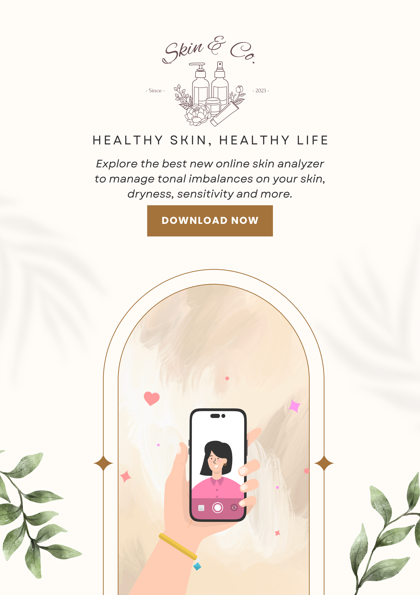
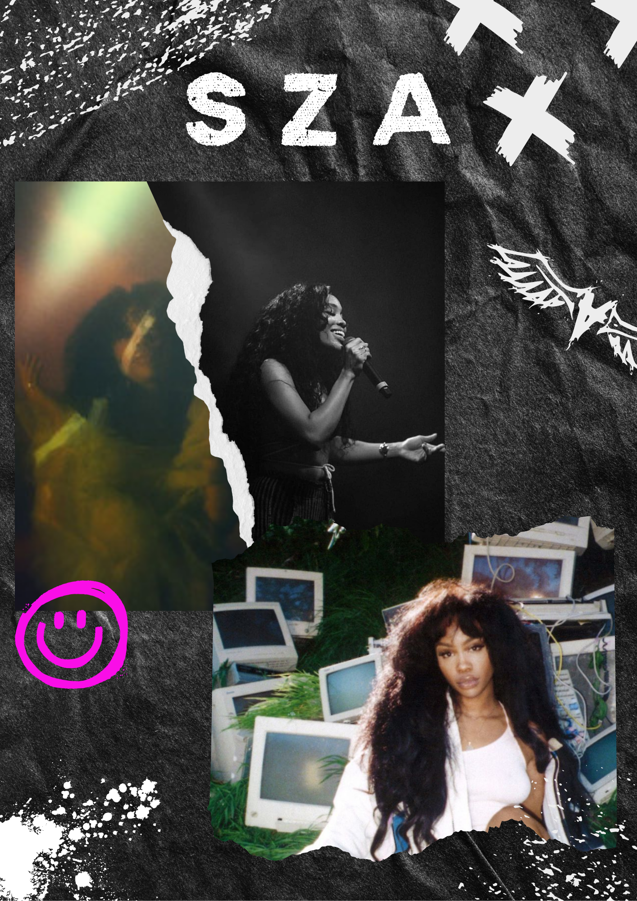
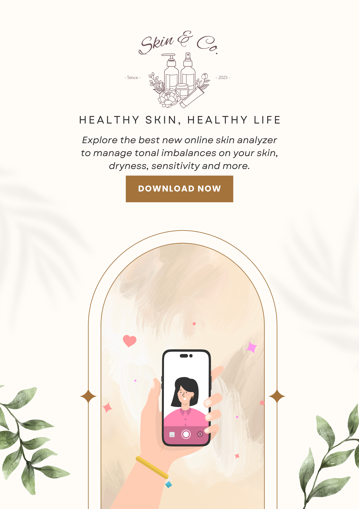
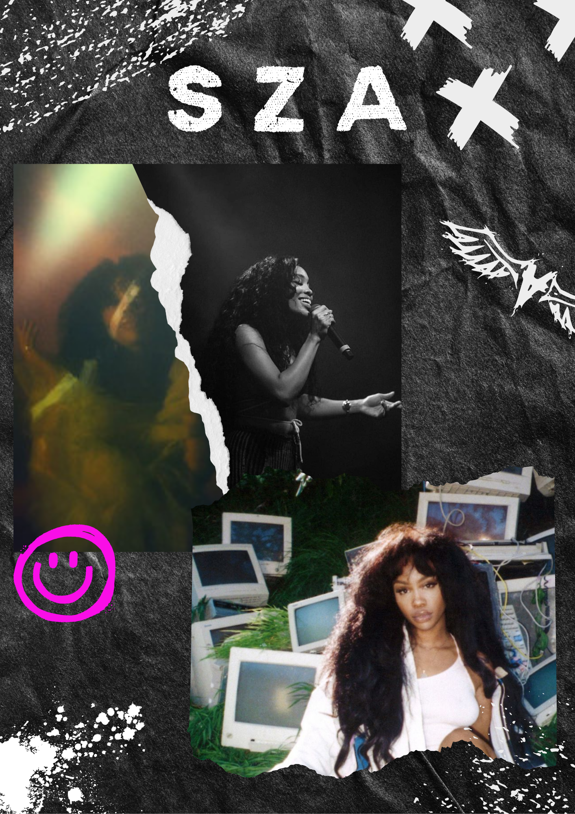

Na een jaar bij Reviving Treasures, waar ik veel bruiloften heb gefotografeerd en gefilmd, ben ik vol enthousiasme aan mijn opleiding begonnen. Het eerste blok was best druk, maar ik heb het goed gedaan. Ondanks de vele opdrachten haalde ik goede cijfers, wat mijn zelfvertrouwen een boost gaf. Ik keekk ernaar uit om deze flow vast te houden tijdens de rest van mijn studie.
Human Computer Interaction
Tijdens het eerste blok van mijn opleiding ontdekte ik dat ik het vak Human-Computer Interaction (HCI) het leukst vond. We leerden over hoe mensen met technologie omgaan. Ik kreeg de kans om een website te ontwerpen voor Studio Slow, een bedrijf dat kleding maakt als antwoord op de fast-fashion industrie. Ik heb hun website ontworpen door hun stijl te gebruiken. Op de site liet ik zien hoe je hun kleding kunt kopen en aanpassen. Tijdens de lessen leerden we over dingen zoals hoe je een website ontwerpt voor mensen met verschillende behoeften en hoe je ervoor zorgt dat iedereen de site kan gebruiken. Naast het ontwerpen van de website hadden we ook een tentamen voor dit vak. Dit project heeft mijn interesse in HCI vergroot.
User Centred Design
Tijdens User-Centered Design hebben we ons gericht op het herontwerpen van producten met de gebruiker als focus. Ons herontwerp hebben we uitgewerkt in een productbiografie, waarin we niet alleen ons ontwerp beschreven, maar ook gebruikersprofielen, persona's en scenario's toevoegden. Dit gaf ons inzicht in de gebruikersbehoeften en hielp ons de gebruikerservaring te verbeteren. UCD heeft mijn perspectief op design veranderd door de focus te leggen op gebruikersbehoeften. Bij het kiezen van Pathé als onderwerp voor ons project moesten we interviews afnemen om de ticketmachines te verbeteren. Deze onverwachte ervaring bracht me uit mijn comfortzone en benadrukte het belang van directe communicatie met gebruikers voor het verbeteren van ontwerpen. Het maken van de productbiografie heeft ons geholpen om dieper na te denken over gebruikersbehoeften en ons ontwerp te verbeteren. Het was een waardevolle ervaring die ons ontwerp versterkte.
Ontwerpgeschiedenis
In het vak Ontwerpgeschiedenis hebben we podcasts beluisterd en daaropvolgend sketchnotes gemaakt. Deze activiteiten waren gebaseerd op kernbegrippen zoals AI/VR, Analoog vs. Digitaal, Punk, DIY, Straight edge, Grunge design, Form follows function, het MAYA-principe, Pop Art, Andy Warhol, Decoratief ontwerp, Minimalistisch ontwerp, Art nouveau / jugendstil, Modernisme en De Stijl, en ook onze eigen experimenten. Tijdens de kick-off zijn we naar het Stedelijk Museum geweest, wat een gave ervaring was. Ik vond het echt tof dat dit vak aan het begin van het jaar was, omdat het me meteen onderdompelde in verschillende aspecten van design, van coole digitale ontwerpen tot ouderwetse tekeningen op papier. Dit opende echt mijn ogen voor de diversiteit van design.
 



Ter conclusie, na het eerste blok van mijn studie, heb ik veel nieuwe kennis opgedaan. Ik tot de conclusie gekomen dat mijn interesse vooral uitgaat naar Human Computer Interaction (HCI), met name in het ontwerpen van interfaces. Mijn afgronde cijfers: een 7 voor HCI, een 7 UCD en een 8 voor Ontwerp Geschiedenis.